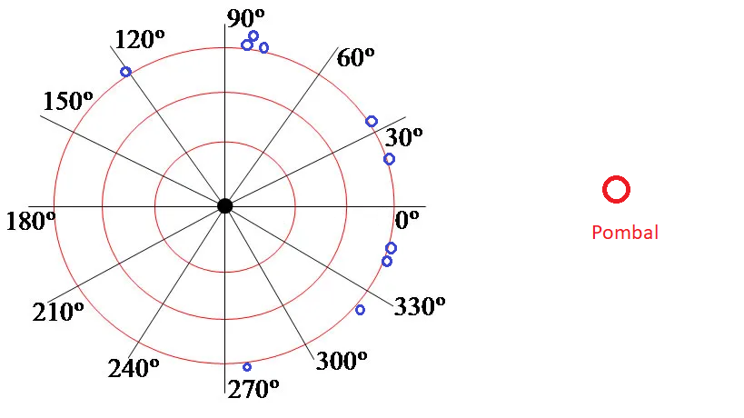
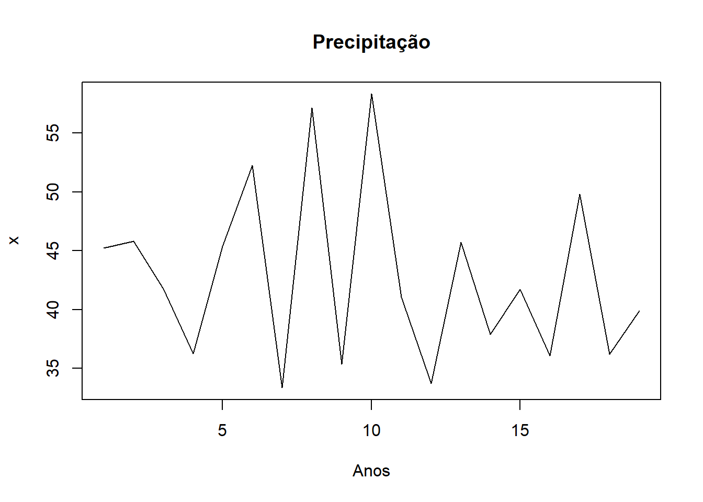

pbinom(7, 9, .5, lower.tail = FALSE)[1] 0.01953125Os dados consistem de observações de uma amostra aleatória bivariada \((X_1,Y_1),\ldots,(X_m,Y_m)\). Em princípio, o teste foi concebido para variáveis aleatórias contínuas, mas pode ser aplicado para variáveis discretas ou ordinais com algumas restrições.
Cada par \((X_i,Y_i)\) será classificado como + ou - se \(X_i<Y_i\) ou se \(X_i>Y_i\) e como 0 (ou empate) se \(X_i=Y_i\). No teste original, os empates são considerados uma inconveniência técnica devido ao instrumento de medida, uma vez que \(P(X_i=Y_i)=0\) para variáveis contínuas.
Sejam \(p_+\) e \(p_-\) a probabilidade de ocorrer um par com sinal \(+\) e \(p_-\) respectivamente. As hipóteses do teste do sinal comparam \(p_+\) com \(p_-\). Note que \(p_+\) pode ser estimada por \(T/n\), onde \(T\) é o número de sinais positivos. Deste modo, \(T\) pode ser utilizada como estatística de teste. Abaixo, apresentamos as principais hipóteses e as respectivas regiões de rejeição.
Como os empates ocorrem apenas como erro de medida, eles são descartados nesse momento, fazendo com que o tamanho da amostra passe de \(n\) para \(n'=n-n_0\), onde \(n_0\) é o número de empates. Como \(p_+\) e \(p_-\) são as únicas possibilidades, basta comparar \(p_+\) com o valor \(1/2\). Temos então as seguintes hipóteses
\[\begin{array}{c|c}\hline \hbox{Hipótese} & \hbox{Região de rejeição} \\ \hline H_0: p_+\leq \frac{1}{2} & T\geq t_1\\ H_1:p_+> \frac{1}{2} & \\ \hline H_0: p_+\geq \frac{1}{2} & T\leq t_0\\ H_1:p_+< \frac{1}{2} & \\ \hline H_0: p_+=\frac{1}{2} & T\leq t_0 \hbox{ ou } T\geq n'-t_0\\ H_1:p_+\neq \frac{1}{2} & \\ \hline \end{array}\]
Considere inicialmente a hipótese nula simples \(H_0: p_+=1/2\). Como \(T\) é o número de sinais positivos em uma amostra de tamanho \(n'\), temos que, sob \(H_0\)
\[T\sim\hbox{Binomial}\left(n',\frac{1}{2}\right).\] Como a distribuição acima é simétrica em torno de \(n'/2\), teremos que \[P\left(T\leq t_0|p_+=\frac{1}{2}\right)=P\left(T\geq n'-t_0|p_+=\frac{1}{2}\right)\] e, portanto, para obter um teste de nível \(\alpha\) basta encontrar o maior valor de \(t_0\) que satisfaz
\[P\left(T\leq t_0|p_+=\frac{1}{2}\right)\leq \frac{\alpha}{2}.\]
Para as hipóteses nulas compostas, é fato que, se \(X\sim\hbox{Binomial}(m,\theta)\), então
\[g(\theta)=F(x|\theta)=(m-x){ m\choose x} \int_0^{1-\theta} u^{m-x-1} (1-u)^x du\] de modo que \(g(\theta)=F(x|\theta)\) é uma função monótona decrescente em \(\theta\). Portanto, para \(H_0:p_+\geq 1/2\)
\[\sup_{p_+\geq 1/2}P(T\leq t_0|p_+)=P\left(T\leq t_0|p_+=\frac{1}{2}\right)\] e o teste de nível \(\alpha\) é dado pelo maior valor de \(t_0\) tal que
\[P\left(T\leq t_0|p_+=\frac{1}{2}\right)\leq \alpha\]
E, para \(H_0:p_+\leq 1/2\)
\[\begin{align}\sup_{p_+\leq 1/2}P(T\geq t_1|p_+)&=\sup_{p_+\leq 1/2}\left(1-P(T< t_1|p_+)\right)\\&=P\left(T\geq t_1|p_+=\frac{1}{2}\right)\end{align}\]
e o teste de nível \(\alpha\) é dado pelo menor valor de \(t_1\) tal que
\[P\left(T\geq t_1|p_+=\frac{1}{2}\right)\leq \alpha\]
Example 3.1 O item \(A\) é produzido usando certo processo. O item \(B\) serve para a mesma função, mas é produzido a partir de um novo processo. Uma empresa fabricante deseja determinar se \(B\) é preferível a \(A\) pelo consumidor. Para este fim, uma amostra de 10 consumidores é selecionada e cada um deles deve utilizar os produtos por um certo período de tempo e em seguida emitir a sua preferência.
Vamos assumir que o sinal + é atribuído quando \(B\) é preferível em relação a \(A\). Então, podemos formular as seguintes hipóteses:
\[\begin{align*} H_0&: p_+\leq 1/2\\ H_1&: p_+> 1/2 \end{align*}\]
Os seguintes dados foram obtidos:
\[\begin{array}{|l|c|}\hline \hbox{Número de pessoas que preferem } B (+)& 8 \\ \hbox{Número de pessoas que preferem } A (-)& 1 \\ \hbox{Empates} & 1 \\ \hline n' & 8+1=9 \\ t_{obs}&8 \\ \hline \end{array}\]
Logo, sob \(H_0\), \(T\sim \hbox{Binomial}(9,1/2)\). O \(p\)-valor do teste é \[P(T\geq 8|p_+=1/2)=P(T>7|p_+=1/2),\] e no R ele é calculado por
pbinom(7, 9, .5, lower.tail = FALSE)[1] 0.01953125logo, ao nível de significância de 5%, há evidências de que \(B\) é preferível a \(A\).
Alternativamente, você pode utilizar o comando, tomando apenas o cuidado de utilizar \(n_+=8\) no primeiro argumento.
binom.test(8,9, p = .5, alternative = 'greater')
Exact binomial test
data: 8 and 9
number of successes = 8, number of trials = 9, p-value = 0.01953
alternative hypothesis: true probability of success is greater than 0.5
95 percent confidence interval:
0.5708645 1.0000000
sample estimates:
probability of success
0.8888889 Distribuição de \(T\) para grandes amostras Para cada par \((X_1,Y_1),\ldots,(X_n,Y_n)\) da amostra sem empates, considere que \(Z_i=1\) se \((X_i,Y_i)\) gerou um sinal + e \(Z_i=0\) em caso contrário. Então,
\[T=\sum_{i=1}^{n'}Z_i\] com \(E[T]=n'/2\) e \(Var[T]=n'/4\). Logo, pelo Teorema Central do Limite, teremos que \[W_n=\frac{2T-n'}{\sqrt{n'}}\stackrel{D}{\to}N(0,1).\] e o teste pode ser realizado utilizando a estatística \(W_n\).
Exercise 3.1 Arbuthnott (1710) examinou os dados de batismos em Londres durante 82 anos consecutivos, registrando o número de meninos e meninas. Para cada ano, ele denotou por \(+\) o evento “mais meninos que meninas” e por \(-\) o oposto. Ele observou que em todos os 82 anos nasceram mais meninos que meninas (\(t_{obs} = 82\)).Assumindo que a probabilidade de nascerem mais meninos que meninas é \(p_+ = 1/2\) (sob a hipótese nula de equilíbrio entre os sexos), teste a hipótese \(H_0: p_+ = 1/2\) contra \(H_1: p_+ \neq 1/2\).
Exercise 3.2 Dez pombos-correio foram levados a 25 km a oeste de seu pombal. Após serem soltos, desejava-se saber se eles se dispersariam em direções aleatórias ou se tenderiam a voar para leste, em direção ao pombal. Binóculos foram usados para observar as aves, e o ângulo de revoada no momento em que sumiram de vista foi registrado:
\[\begin{array}{ccccc}20 & 35 & 350 & 120 & 85 \\345 & 80 & 320 & 280 & 85 \end{array}\]
A hipótese científica é que os pombos conseguem se orientar e, portanto, devem tender ao leste. A figura abaixo mostra os ângulos observados e a direção do pombal.

Os ângulos situados mais a leste do que a oeste (no intervalo \([0^\circ, 90^\circ]\) ou \([270^\circ, 360^\circ]\)) serão classificados como \(+\) (sucesso), enquanto os demais serão classificados como \(-\). Teste a hipótese de que os pombos conseguem se orientar em direção ao seu pombal ao nível de significância de 5%.
Exercise 3.3 Charles Darwin realizou um experimento para comparar o crescimento de plantas da mesma espécie (\(Zea \ mays\)), porém com origens distintas: uma semente era fruto de fertilização cruzada e a outra de autofecundação. Para controlar fatores ambientais (como luz e nutrientes), Darwin plantou os pares de sementes em lados opostos do mesmo vaso. Os dados abaixo referem-se às alturas (em polegadas) de 15 pares de plantas após um período determinado de crescimento:
\[\begin{array}{c|c|c} \hline \text{Par} & \text{Cruzada } (C) & \text{Autofecundada } (A) \\ \hline 1 & 23,5 & 17,4 \\ 2 & 12,0 & 20,4 \\ 3 & 21,0 & 20,0 \\ 4 & 22,0 & 20,0 \\ 5 & 18,0 & 18,4 \\ 6 & 21,5 & 18,6 \\ 7 & 23,3 & 18,6 \\ 8 & 21,0 & 15,3 \\ 9 & 22,1 & 16,5 \\ 10 & 23,0 & 18,0 \\ 11 & 12,0 & 16,3 \\ 12 & 23,0 & 18,0 \\ 13 & 23,1 & 12,8 \\ 14 & 17,1 & 15,5 \\ 15 & 21,5 & 18,0 \\ \hline \end{array}\] Deseja-se testar se a fertilização cruzada produz plantas com maior crescimento mediano do que a autofecundação. Formule as hipóteses e realize o teste do sinal ao nível de 5%.
Exercise 3.4 Em seus estudos sobre inteligência de primatas, Wolfgang Köhler testou se chimpanzés demonstravam preferência por ferramentas que facilitassem a obtenção de comida. Em um experimento, 12 chimpanzés foram apresentados a dois tipos de varetas para alcançar uma fruta fora da jaula: uma vareta sólida (mais eficiente) e uma vareta flexível (menos eficiente). Cada chimpanzé foi testado uma única vez. Os resultados foram:
\[\begin{array}{l|c}\hline \hbox{Escolha} & \hbox{Frequência} \\ \hline \hbox{Vareta Sólida} & 10 \\ \hbox{Vareta Flexível} & 2 \\ \hline \end{array}\]
Teste a hipótese de que os chimpanzés possuem preferência pela ferramenta mais eficiente ao nível de 5%.
Exercise 3.5 Um estudo clínico investigou a eficácia de duas drogas (A e B) para prolongar o sono em 10 pacientes. Cada paciente usou ambas as drogas em noites diferentes. O dado registrado foi o ganho de horas de sono em relação à noite de controle (sem droga).
\[\begin{array}{ccc}\hline \text{Paciente} & \text{Droga A} & \text{Droga B} \\ \hline 1 & +0,7 & +1,9 \\ 2 & -1,6 & +0,8 \\ 3 & -0,2 & +1,1 \\ 4 & -1,2 & +0,1 \\ 5 & -0,1 & -0,1\\ 6 & +3,4 & +4,4\\ 7 & +3,7 & +5,5\\ 8 & +0,8 & +1,6\\ 9 & 0,0 & +4,6\\ 10 & +2,0 & +3,4\\ \hline \end{array}\]
Deseja-se testar se a Droga B é superior à Droga A. Realize o teste com nível de significância de 5%.
Exercise 3.6 Para verificar se uma usina hidrelétrica está alterando a concentração de oxigênio dissolvido (OD) em um rio, biólogos coletaram amostras em 12 locais diferentes. Em cada local, uma amostra foi coletada 100 metros acima (montante) da usina e outra 100 metros abaixo (jusante).
\[\begin{array}{lcccc}\hline\text{Local} & \text{Acima } (A) & \text{Abaixo } \\ \hline 1 & 6,5 & 6,2 \\ 2 & 7,0 & 6,8 \\ 3 & 6,8 & 6,9 \\ 4 & 7,2 & 6,5 \\ 5 & 6,1 & 6,1 \\ 6 & 6,9 & 6,4 \\ 7 & 7,4 & 7,0 \\ 8 & 6,6 & 6,3 \\ 9 & 7,1 & 7,1 \\ 10 & 6,7 & 6,2 \\ 11 & 7,3 & 6,9 \\ 12 & 6,4 & 6,0 \\ \hline\end{array}\]
Teste a hipótese de que a passagem pela usina reduz a concentração de oxigênio dissolvido ao nível de 5%.
Exercise 3.7 O efeito Stroop demonstra a dificuldade que o cérebro tem em processar informações conflitantes. Em um experimento, 10 indivíduos tiveram seus tempos de reação medidos em duas tarefas:
Tarefa Neutra: Ler o nome de uma cor escrito em tinta preta.
Tarefa de Interferência: Ler o nome de uma cor escrito em uma tinta de cor diferente (ex: a palavra “AZUL” escrita em vermelho).
Espera-se que o tempo de reação na tarefa de interferência (\(T_I\)) seja maior que na tarefa neutra (\(T_N\)).
\[\begin{array}{ccc}\hline \text{Indivíduo} & T_N \text{ (seg)} & T_I \text{ (seg)} \\ \hline 1 & 0,85 & 1,20 \\ 2 & 0,92 & 1,10 \\ 3 & 0,78 & 0,75 \\ 4 & 1,05 & 1,50 \\ 5 & 0,88 & 1,30 \\ 6 & 0,95 & 1,45 \\ 7 & 1,12 & 1,25 \\ 8 & 0,80 & 1,10 \\ 9 & 0,98 & 1,40 \\ 10 & 0,90 & 1,15 \\ \hline\end{array}\]
Deseja-se testar se o tempo de reação na tarefa de interferência é significativamente maior ao nível de 5%.
Seja \(X_1,\ldots,X_n\) uma amostra aleatória do modelo \(F\) e seja \(\theta\) a sua mediana. Sabemos que \[\theta=F^{-1}(0,5)\Rightarrow F(\theta)=0,5.\] Considere a hipótese \(H_0:\theta=\theta_0\) contra \(H_1:\theta\neq\theta_0\). Seja \(Z_i=I_{(\theta_0,\infty)}(X_i)\). Então a estatística \(N_+=\sum_{i=1}^n Z_i\) pode ser utilizada para testar \(H_0\).
Example 3.2 Um modelo de forno de micro-ondas foi projetado para emitir um nível de radiação de no máximo 0,15. Deseja-se testar se um lote desses micro-ondas apresenta um excesso de radiação prejudicial, definido como uma mediana maior que o limite de segurança de 0,15. a mediana da radiação emitida por esses fornos é condizente com esse valor. Foram realizadas as seguintes medidas:
\[\begin{array}{cccccccccc} 0,09& 0,18& 0,10& 0,05& 0,12& 0,40& 0,10& 0,05& 0,03& 0,20\\ 0,08& 0,10& 0,30& 0,20& 0,02& 0,01& 0,10& 0,08& 0,16& 0,11\end{array}\]
Utilize o teste do sinal para testar a hipótese de que o lote apresenta excesso de radiação.
Seja \(\theta\) a mediana da radiação emitida. Desejamos testar \(H_0:\theta\leq 0,15\) contra \(H_1:\theta>0,15\).
Temos que verificar quais valores são maiores/menores que 0,15. Os sinais de cada valor são dados abaixo
\[\begin{array}{c|c|c|c|c|c|c|c|c|c} 0,09(-)& 0,18(+)& 0,10(-)& 0,05(-)& 0,12(-)& 0,40(+)& 0,10(-)& 0,05(-)& 0,03(-)& 0,20(+)\\ 0,08(-)& 0,10(-)& 0,30(+)& 0,20(+)& 0,02(-)& 0,01(-)& 0,10(-)& 0,08(-)& 0,16(+)& 0,11(-)\end{array}\] logo \(n_+=6\). O p-valor deste teste é
pbinom(5,20,.5, lower.tail = FALSE)[1] 0.9793053Exercise 3.8 Foram coletadas 15 amostras de papel para medir sua densidade em gramas por centímetro cúbico (g/cm³). Espera-se que a amostra seja proveniente de uma distribuição com mediana iguaç a 0,8. Teste a hipótese de que o lote de papéis é mais denso do que o padrão.
\[\begin{array}{ccccc} 0,816& 0,836& 0,815& 0,822& 0,822\\ 0,843& 0,824& 0,788& 0,782& 0,795\\ 0,805& 0,836& 0,738& 0,772& 0,776\\ \end{array}\]
Considere uma amostra aleatória bivariada dos vetores \((X_1,Y_1),\ldots,(X_m,Y_m)\), onde as variáveis são binárias. Assim, os valores possíveis para \((X_i,Y_i)\) são (0,0), (0,1), (1,0) e (1,1). Os dados são sumarizados em uma tabela de contigência \(2\times 2\), como esta abaixo:
\[\begin{array}{c|cc}\hline & Y_i=0& Y_i=1 \\ \hline X_i=0 & a & b \\ X_i=1 & c & d \\ \hline \end{array} \] onde \(a,b,c,d\) são as frequências de cada combinação de \((X,Y)\). O objetivo do teste de McNemar é testar se as marginais de \(X\) e \(Y\) são iguais. Para tanto, consideramos as seguintes hipóteses:
\[\begin{align*} H_0&: P(X=0,Y=1)=P(X=1,Y=0)\\ H_1&:P(X=1,Y=0)\neq P(X=0,Y=1) \end{align*}\]
Note que isto é equivalente a testar
\[\begin{align*} &H_0: P(X=0,Y=1)=P(X=1,Y=0) \\ &\Rightarrow H_0: P(X=0,Y=1)+P(X=0,Y=0)=P(X=1,Y=0)+P(X=0,Y=0)\\ &\Rightarrow H_0:P(X=0)=P(Y=0) \end{align*}\] e, portanto, o primeiro conjunto de hipóteses implica em marginais iguais.
O teste de McNemar pode ser visto como uma variação do teste do sinal. Considere as classificações abaixo:
Se \((X_i,Y_i)=(0,1)\) atribuímos +
Se \((X_i,Y_i)=(1,0))\) atribuímos -
Se \((X_i.Y_i)\) é igual a (0,0) ou (1,1), atribuímos 0 (empate).
Identificando \(p_+=P(X=0,Y=1)\) e \(p_-=1-p_+\), a hipótese nula do teste de McNemar é equivalente a \[H_0:p_+=p_-\]
A estatística do teste é o número de sinais positivos, ou seja \(N_+=b\). Como o tamanho da amostra após a eliminação dos empates é \(n'=b+c\), teremos que, sob \(H_0\)
\[N_+\sim\hbox{Binomial}(b+c,1/2).\] Contudo, é usual utilizar o TCL para realizar esse teste quando \(b>20\). Nesses casos, teremos que, sob \(H_0\)
\[\frac{2N_+-(b+c)}{\sqrt{n'}}=\frac{(b-c)^2fd}{\sqrt{b+c}}\stackrel{D}{\to}N(0,1)\] e \[T=\frac{b-c}{b+c}\stackrel{D}{\to}\chi^2_1.\]
A tabela abaixo resume o uso das estatísticas apresentadas.
$$ \[\begin{array}{c|c|c}\hline\hbox{Estatística} & N_+=b & T=\frac{(b-c)^2}{b+c} \\ \hline \hbox{Distribuição sob }H_0 & \hbox{Binomial}(b+c,1/2) & \chi^2_1 \\ \hline \hbox{p-valor} & 2\min\{P(N_+\geq n_+),P(N_+\leq n_+)\} & P(T>t) \\ \hline \end{array}\]$$
Example 3.3 Antes de um debate nacional entre dois candidatos à presidência dos EUA, uma amostra de 100 eleitores foi selecionada e o seu candidato anotado. 84 escolheram o candidato democrata e os 16 restantes o republicano. Após o debate, houveram mudanças de opinião, conforme a tabela abaixo:
\[\begin{array}{c|cc|c}\hline \hbox{Antes\Depois} & \hbox{Democrata} & \hbox{Republicano} & \hbox{Total}\\ \hline \hbox{Democrata} & 63 & 21 & 84 \\ \hbox{Republicano} & 4 & 12 & 16 \\ \hline \end{array}\]
O objetivo é determinar se houve alteração na opinião dos eleitores após o detabe. Podemos escrever a seguinte hipótese nula
\[H_0:\hbox{ o alinhamento político dos eleitores não foi alterado com o debate.}\]
Vamos considerar que \(0\) representa o voto para o candidato democrata e 1 representa o voto para o republicano. Vamos considerar ainda que \(X_i\) é o voto do \(i\)-ésimo indivíduo antes do debate e \(Y_i\) é o mesmo depois. Então, a hipótese nula pode ser reescrita como
$$H_0:P(X=0)=P(Y=0).$$Identificando \(b=21\) e \(c=4\), podemos realizar o teste de McNemar:
b = 21
c = 4
binom.test(b, b+c, .5)
Exact binomial test
data: b and b + c
number of successes = 21, number of trials = 25, p-value = 0.0009105
alternative hypothesis: true probability of success is not equal to 0.5
95 percent confidence interval:
0.6391715 0.9546205
sample estimates:
probability of success
0.84 que, um p-valor de 0,0009, nos leva a rejeitar a hipótese nula. Alternativamente, como \(b+c>20\), podemos realizar o teste de McNemar aproximado. Como
\[t_{obs}=\frac{(21-4)^2}{21+4}=\frac{289}{25}=11,56\]
teremos que o p-valor deste teste é
t = 11.56
pchisq( t, 1, lower.tail=FALSE)[1] 0.0006738585o que também nos leva a rejeitar a hipótese nula, concluindo que alinhamento político dos eleitores foi alterado com o debate.
Exercise 3.9 Para testar o efeito de uma nova droga, um grupo de 100 pacientes foi avaliado em dois momentos. Em um dos momentos, o paciente recebeu um placebo e no outro a nova droga. Como resultado, 35 pácientes sentiram alívio com o placebo e 55 pacientes sentiram alívio com a nova droga. Foram observados os seguintes pares discordantes:
Pessoas que sentiram alívio com o placebo, mas não com a droga: 15.
Pessoas que não sentiram alívio com o placebo, mas sentiram com a droga: 35
Complete a tabela abaixo. Em seguida, realize o teste de McNemar para testar se a nova droga tem efeito.
\[\begin{array}{c|cc|c}\hline \hbox{placebo/nova drogra} & \hbox{alívio} & \hbox{não alívio} & \hbox{Total} \\ \hline \hbox{alívio} & & 15 & 35 \\ \hbox{não alívio} & 35 & & \\ \hline \hbox{Total} & 55 & & \\ \hline\end{array}\]
Exercise 3.10 O desempenho de 28 vendedores foi classificado como “Aceitável” ou “Não Aceitável” antes e depois de assistirem a um filme de treinamento. Antes do filme, 9 eram aceitáveis; após o filme, esse número subiu para 18. Dos que mudaram de categoria, 13 vendedores passaram de “Não Aceitável” para “Aceitável”, e 4 vendedores passaram de “Aceitável” para “Não Aceitável”. Investigue se o treinamento teve um efeito positivo significativo na avaliação dos vendedores
Os dados consistem de observações de uma sequência de variáveis aleatórias \(X_1,\ldots,X_m\), onde o índice representa o tempo. O objetivo é determinar se existe tendência monótona, podendo ainda classificar como de crescimento ou decrescimento.
Seja \(c=m/2\) se \(m\) for par ou \(c=(m+1)/2\) em caso contrário. As variáveis são agrupadas formando os pares \((X_1,X_{1+c}),(X_2,X_{2+c}),\ldots,(X_{m-c},X_m)\). Em seguida, para cada \(i\):
Deste modo, podemos utilizar o teste do sinal. Como o usual, seja \(n'= n_++n_-\). A ideia é simples: se forem observados mais valores positivos(negativos), a segunda metade da série exibe valores maiores que a primeira, evidenciando tendência monótona crescente(decrescente). Se \(N_+\) estiver próximo de \(n'/2\), não há evidências para tendência. As hipóteses são sumarizadas na tabela abaixo.
\[\begin{array}{c|c} \hbox{Hipótese sobre a tendência} & \hbox{Hipótese como função de }p_+\\\hline \\ \begin{cases}H_0: \hbox{não há tendência}\\ H_1: \hbox{há tendência monótona}\end{cases} & \begin{cases}H_0: p_+=\frac{1}{2}\\ H_1: p_+\neq\frac{1}{2}\end{cases}\\ \hline \begin{cases}H_0: \hbox{não há tendência}\\ H_1: \hbox{há tendência crescente}\end{cases} & \begin{cases}H_0: p_+\leq\frac{1}{2}\\ H_1: p_+>\frac{1}{2}\end{cases}\\ \hline \begin{cases}H_0: \hbox{não há tendência}\\ H_1: \hbox{há tendência decrescente}\end{cases} & \begin{cases}H_0: p_+\geq\frac{1}{2}\\ H_1: p_+<\frac{1}{2}\end{cases}\\ \hline \end{array}\]
Example 3.4 Foi registrado o total de precipitação anual por 19 anos. O objetivo é determinar se há tendência (monótona) de precipitação. As precipitações, em polegadas, foram
\[\begin{array}{cccccc} 45,25 & 45,83 & 41,77 & 36,26 & 45,37 & 52,25\\ 33,37 & 57,16 & 35,37 & 58,32 & 41,05 & 33,72 \\ 45,73 & 37,90 & 41,72 & 36,07 & 49,83 & 36,24\\\ 39,90 & & & & & \\ \end{array}\]
Como \(m=19\), temos \(c=(19+1)/2=10\). Abaixo, organizamos o pares e os classificamos para a aplicação do teste
\[\begin{array}{l|l} (X_1,X_{11}) = (45,25\;,\; 41,05)\equiv - & (X_6,X_{16}) = (52, 25\;,\; 36,07)\equiv -\\ (X_2,X_{12}) = (45,83\;,\; 33,72)\equiv - & (X_7,X_{17}) = (35,37\;,\; 49,83)\equiv +\\ (X_3,X_{13}) = (41,77\;,\; 45,73)\equiv + & (X_8,X_{18}) = (57,16 \;,\; 36,24)\equiv -\\ (X_4,X_{14}) = ( 36,26 \;,\; 37,09 )\equiv + & (X_9,X_{19}) = (35,37 \;,\; 39 ,90)\equiv + \\ (X_5,X_{15}) = (45, 375\;,\; 41,72)\equiv - & \\ \end{array}\]
e obtivemos \(n_{+}=4\). As hipóteses são
\(H_0\): não há tendência (a amostra é aleatória)
\(H_1:\) há tendência
Como há 9 pares, teremos que, sob \(H_0\), \(T\sim\hbox{Binomial}(9,1/2)\). O p-valor o teste é
binom.test(4,9,.5)
Exact binomial test
data: 4 and 9
number of successes = 4, number of trials = 9, p-value = 1
alternative hypothesis: true probability of success is not equal to 0.5
95 percent confidence interval:
0.1369957 0.7879915
sample estimates:
probability of success
0.4444444 logo não há evidências de tendência monótona. Abaixo, apresentamos o gráfico da série temporal.
x <- c(45.25, 45.83, 41.77, 36.26, 45.37, 52.25,
33.37, 57.16, 35.37, 58.32, 41.05, 33.72,
45.73, 37.90, 41.72, 36.07, 49.83, 36.24,
39.90 )
ts.plot(x, main= 'Precipitação', xlab='Anos')